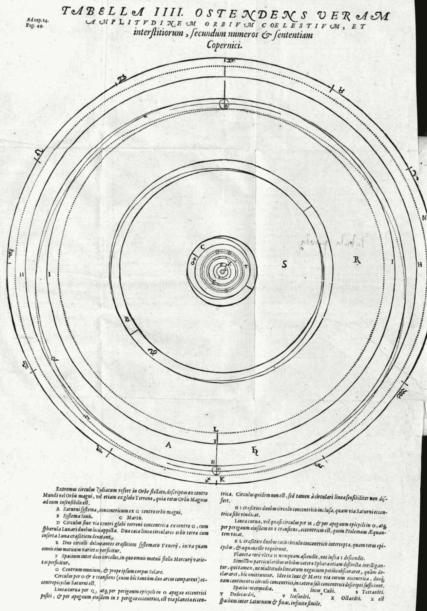

Chapter XIV: The Principal Aim of This Little Book, and the Astronomical Proof That These Five Bodies Lie Between the Orbs¶
f. 0057 · p. 47The principal aim of this little book, and the astronomical proof that these five bodies lie between the orbs.
To come, therefore, to my principal design: it is well known that the paths of the planets are eccentric, and hence the opinion has been received among natural philosophers that the orbs obtain as great a thickness as is required for demonstrating the varieties of their motions. And up to this point, indeed, Copernicus agrees with our philosophers. Yet now, going further, no small difference of opinion is discerned. For the natural philosophers judge that from the lowest
f. 0058 · p. 48surface of the lunar heaven all the way to the tenth sphere there is nothing empty of celestial orbs; rather, orb is always touched by orb, and the lowest surface of the upper is thoroughly joined with the highest surface of the lower. For if someone asks, for example, what the physical place of the heaven of Mars is, one answers: the inner surface of Jupiter. And in Ptolemy, and in the customary description of astronomy, they can perhaps maintain this plea, for the reason that there is no occasion and no means there for investigating the proportions of the orbs. For just as nobody easily contradicts those who have written about the new Indies if he has not himself surveyed those places, so an astronomer cannot refute the petty reasonings of the natural philosophers concerning the contact of the orbs if the experience of observations and the condition of his hypotheses have not carried him up into the heaven itself and between the orbs.
Now, however, from the hypotheses of Copernicus and from that motion of the Earth it follows that there is no interval between neighboring orbs that does not exceed the eccentricity of either orb by many parts. And take an example of this matter from the orbs of Earth and Venus—those very ones, namely, that stand least far apart from each other. In parts of which the mean distance of Earth from the center of the universe is 60, the mean distance of Venus from the same is \(43\frac{1}{6}\). (Margin: Copern. Bk. 5, ch. 21, 22; and below in the Table.) The difference is \(16\frac{5}{6}\) minutes. Now Earth at perigee approaches Venus by \(2\frac{1}{2}\) minutes; Venus advances to meet her at apogee likewise by \(2\frac{1}{2}\) minutes, a sum of 5 minutes. Therefore by twelve remaining minutes these two bodies stand apart even when they are nearest to each other. And if someone asserts that this intermediate space is filled by their own orbs carrying the nodes and circles of latitude, let him consider that those offices can also be performed by far thinner orbs than such as would fill so great a gap, and that nature is not to be burdened with the monstrous bulk of such enormous orbs. Although, in truth, all of Copernicus’s hypotheses are so arranged, so fitted, and so serve one another, that we scarcely seem to need any orb wandering beyond the planet’s path in order to render the motions. Yet grant that among neighboring planets the spaces are filled by these orbs: let us see, I pray, of what sort that space is. Since from the perigean distance of Jupiter to the apogean distance of Mars a space is reckoned twice as long as from Mars himself to the center of the universe (for Jupiter’s distance is triple that of Mars), shall so huge a space, twice as thick as all of Mars, be filled with such portentous orbs merely for varying tiny motions to the senses in longitude and latitude?
f. 0060 · p. 49What luxury of nature is this? How absurd? How useless? How little customary with her! And from this one may see that in Copernicus no orb is touched by another, but vast intervals are left between the systems, certainly full of celestial air, yet belonging to neither of the neighboring systems. By this plate (Margin: Here belongs the Fifth Table) I set before your eyes the magnitudes of the orbs and of the interstices according to their true proportions, as expressed from the numbers by Copernicus.
f. 0059 · Tabella IIII

TABLE IV. Showing the true amplitude of the celestial orbs and of the interstices, according to the numbers and teaching of Copernicus.
The outermost circle represents the Zodiac in the starry orb, described from the center of the universe or of the Great Orb, or even from the terrestrial globe, because the whole Great Orb is insensible in comparison with it.
A: The system of Saturn, concentric from
G, the center of the Great Orb.B: The system of Jupiter. C: Of Mars.
D: The circle or path of the center of the terrestrial globe, concentric from center
G, with the Lunar spherelet painted in at two places. The two dotted circular lines denote the thickness of the Earth’s orb with the Moon inserted.E: Two little circles delineating the thickness of the system of Venus, within which the variety of all its motions is accomplished.
F: The space between two little circles, in which all the variety of the motions of the star Mercury is accomplished.
G: The center of all, and near it the Solar body itself.
The circle passing through o and P (of which only two arcs appear here) is the eccentrepicycle of Saturn. The curved line through ♄, and through the perigee of the epicycle placed at the apogee o of the eccentric, and through the apogee of the same at the perigee P of the eccentric, is the eccentric path of the planet. It is not indeed a circle, yet it does not differ sensibly from a circular line. H I is the thickness enclosed by two concentric circles, which the eccentric path of Saturn claims for itself. The curved line, or quasi-circle passing through M, and through the apogee of the epicycle at o, and through the perigee of the same at P, is the eccentric which Ptolemy calls the Equant. K L is the thickness intercepted between two dotted concentric circles, which the whole epicycle and that equant require. Yet the planet never ascends beyond H, nor descends below I.
Let the remaining spheres also be understood as divided by similar particular orbs, which however are omitted here lest a multitude of lines should obscure the matter rather than clarify it. Therefore in Jupiter and Mars their eccentric path and the two concentric circles containing it suffice; in the rest, the concentric ones alone are drawn.
Intermediate spaces: R, the place of the Cube; S, of the Tetrahedron; T, of the Dodecahedron; V, of the Icosahedron; X, of the Octahedron. Z is the space between Saturn and the fixed stars, resembling the infinite.
Now, since at the beginning I professed to give the causes of these spaces from the five bodies—why such great spaces were severally left between each pair of planets by the Best and Greatest Creator, namely because each figure produces its own interval—let us now see how happily this has been attempted, and let us debate this case before Astronomy as Judge, with Copernicus as interpreter. To the orbs themselves I leave only so much thickness as the ascent and descent of the planet requires; whether this suffices, however, you will see below in Chapter 22. Now if the figures are interposed, as I have said, the lowest surface of the upper orb ought to be equaled to the circumscribed sphere of the figure, and the highest surface of the lower orb to the inscribed sphere; and the figures are to be reckoned in that order which I confirmed above by arguments. Wherefore:
If the lowest of … is 1000 |
The highest ought to be |
Yet according to Copernicus it is |
Copern. Bk. 5 |
|---|---|---|---|
Saturn (♄) |
Jupiter 577 |
635 |
Ch. 9 |
Jupiter (♃) |
Mars 333 |
333 |
Ch. 14 |
Mars (♂) |
Earth 795 |
757 |
Ch. 19 |
Earth |
Venus 795 |
794 |
Ch. 21 & 22 |
Venus (♀) |
Mercury 577 or 707 |
723 |
Ch. 27 |
Now if the lunar system be reckoned into the thickness of the terrestrial orb, then if the lowest surface of the terrestrial orb, comprehending the Moon also, is 1000, the highest of Venus in Copernicus is 847. And the highest margin of the terrestrial orb with the Moon is 801, if the lowest of ♂ has 1000. Here I would have you look back repeatedly to the table of the second chapter, namely to a representation of this interposition of whatever sort.
Behold these parallel numbers close to one another: those of Mars and Venus are the very same, those of Earth and Mercury are not very different, and those of Jupiter alone disagree immoderately—though at
f. 0061 · p. 50so great a distance nobody should wonder at it. And in Mars and Venus, neighbors to the orb of Earth, you see how great a difference the tiny orb of the Moon produces when reckoned into the thickness of the terrestrial orb—yet that tiny orb scarcely equals \(3'\) minutes, in parts of which the orb of Earth has 60.
From this you can gather how easily it would have been noticed, and how great an inequality of numbers would have appeared, if these things were being attempted against the nature of the heaven—that is, if God himself in Creation had not had regard to these proportions. Certainly this cannot be by chance, that the proportions of the bodies are so near to these intervals: both for other reasons and most of all because the order of the intervals is the very same which I assigned to the bodies above among the best intervals; see Chapter 3. For even though 635 differs from 577, yet it is nearer to none than to this very one.